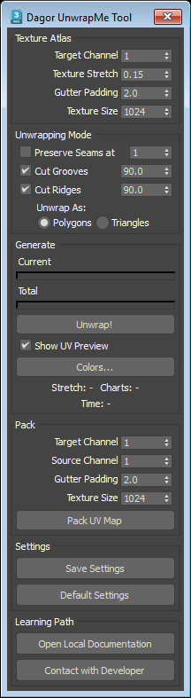

Dagor UnwrapMe Tool
Installation
Install the script following the provided instructions.
3ds Max Version Requirement
This script requires 3ds Max 2025 or later.
Overview
Dagor UnwrapMe Tool creates or packs a UV map for one mesh. It uses UVAtlas to make charts and place them in a square texture atlas.

Important
Select one object before you use Unwrap! or Pack UV Map. The tool converts the object to an editable mesh before it writes UV data. Save a copy when you must keep the object modifier stack.
Open GaijinTools > Dagor UnwrapMe…. You can also run dagor_unwrap_me.ms from the toolbox directory.
Texture Atlas
These controls set the new UV map for Unwrap!.
Target Channel spinner selects the map channel where the tool writes the generated UV map. The tool creates the channel when it does not exist.
Texture Stretch spinner sets how much the tool splits the mesh into UV charts. A lower value makes more UV charts.
Gutter Padding spinner sets the space in pixels between UV charts. Use a larger value to reduce texture bleed at chart edges.
Texture Size spinner sets the width and height of the square texture atlas. A larger texture gives the tool more space for charts.
Tip
Start with texture size 1024 and gutter padding 2. Increase Texture Size before you increase Texture Stretch when you need less distortion.
Unwrapping Mode
This group sets the edges where the tool can split the mesh into UV charts.
Preserve Seams at checkbox keeps the seams from an existing UV map. Set the spinner to the source map channel. The tool cuts each edge that is already a seam in this channel.
Note
This option has no effect when the selected source channel has no UV map.
Cut Grooves checkbox adds a cut along concave bends. The adjacent spinner sets the minimum bend angle in degrees. The tool cuts only grooves at or above this angle.
Cut Ridges checkbox adds a cut along convex bends. The adjacent spinner sets the minimum bend angle in degrees. The tool cuts only ridges at or above this angle.
Unwrap As radio buttons selects the input mode for UVAtlas. Select Polygons for the default polygon mode or Triangles for triangle mode.
Generate
Current progress bar shows that the unwrap engine works. It does not show an exact completion value.
Total progress bar shows the completion value from the unwrap engine.
Unwrap! button starts the unwrap. The tool writes the result to Target Channel, then adds an Unwrap UVW modifier set to this channel so that you can inspect and edit the result.
Show UV Preview checkbox opens a bitmap preview after a successful unwrap or pack operation.
Colors… button opens the preview color dialog. It sets colors for the background, normal edges, false edges, original seams, and new seams.
Stretch result shows the distortion value returned by the unwrap engine.
Charts result shows the count of created UV charts.
Time result shows the unwrap duration in minutes and seconds.
Warning
The tool can show an unwrap error when the charts do not fit the atlas. Increase Texture Size or Texture Stretch. Then run Unwrap! again.
Pack
Use this group to repack an existing UV map. It does not create new seam cuts.
Target Channel spinner selects the map channel where the packed UV map is written.
Source Channel spinner selects the existing UV map to pack. This channel must contain UV data.
Gutter Padding spinner sets the space in pixels between packed charts.
Texture Size spinner sets the width and height of the square packing atlas.
Pack UV Map button normalizes chart texel density, packs the charts from Source Channel, and writes the result to Target Channel.
Note
When Show UV Preview is selected, Pack UV Map also opens a preview of the packed UV map.
Settings
Save Settings button saves all current values and the dialog position to
dagor_unwrap_me.ininear the script.Default Settings button restores the tool default values.
The tool also saves the current settings when you close its window and loads them when you open it.
Support
Open Local Documentation button opens this local page.
Contact with Developer button opens the developer page.
Tip
If you have questions, contact the author directly at a.vlasov@gaijin.team.
Quick Workflow
Select one mesh.
Set Target Channel, Gutter Padding, and Texture Size.
Set the seam and bend options for the chart cuts that you need.
Click Unwrap!.
Check Stretch, Charts, and the UV preview.
Use Pack UV Map when you only need to repack UV charts from an existing channel.